ShinKu · UI review gallery
Sanctuary direction across the app. 13 of 24 new boards rendered; 33 new panels await image generation. Six earlier panels are also included.
Rendering is incomplete: Historical quota observation: image generation reached its usage limit on 2026-11-05. Tool-estimated reset was 2026-11-06 09:45:35 Asia/Shanghai (tool estimate); quota has not been rechecked during this audit. Resume at board 14. Remaining briefs are saved; placeholders are not finished mockups. Images, implementation and phone installation are tracked separately.
Previously reviewed direction
The owner likes this direction. These are visual references. Provisional panel scores and remaining work are in the implementation audit; no panel is certified visually complete.
01. Discovery & searchGenerated · review needed
Implementation: 70% — partial (provisional) · Panel evidence and remaining work
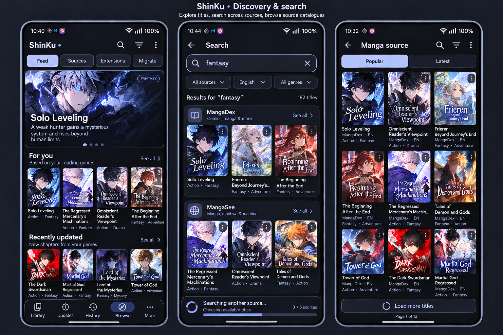
Review note: Preserve genre filters and full-title access; generated counts and truncated captions require review.
Screen briefs and behavior scope
- Discover
Home Browse feed. Compact featured manga card, full two-line title, search action, genre chips. Horizontal shelves 'For you' and 'Recently updated', readable cover captions and 'See all'. Small explanation 'Based on your reading genres'. Tabs Feed, Sources, Extensions, Migrate remain fully readable via a scrollable tab strip. Browse selected in dock. Preserve shelf size and source controls.
- Global search
Back arrow, large search field containing 'fantasy', clear icon, source/language filter chips. Group results by source with source heading and See all, two or three covers per row, complete short titles. A small inline 'Searching another source…' row shows partial progress without blocking available results. No home dock.
- Source catalogue
Back arrow, source title 'Manga source', search and filter icons; Popular and Latest tabs; three-column manga grid with legible multi-line captions, source and language context, and bottom-safe pagination loading. No brand-new recommendation engine or extra functionality.
Exact image-generation prompt
02. Sources, extensions & repositoriesGenerated · review needed
Implementation: 60% — partial (provisional) · Panel evidence and remaining work
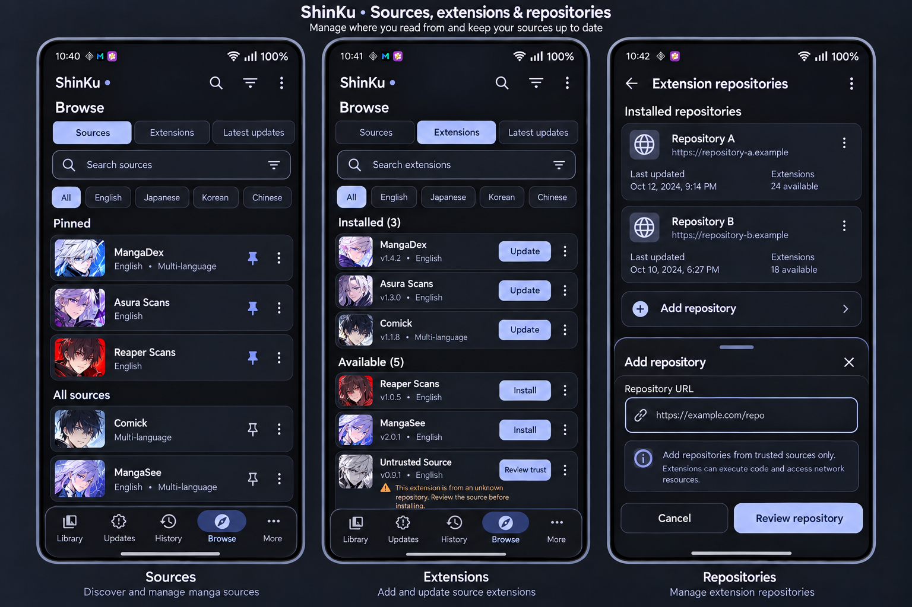
Review note: Preserve Feed / Sources / Extensions / Migrate routes; the generated Latest updates tab must not replace an existing route.
Screen briefs and behavior scope
- Sources
Home Browse Sources tab selected. Search field, language chips, Pinned section and All sources section. Rounded source rows with icon, name, language, pin action and overflow. A latest-updates shortcut is secondary. All Sources/Extensions tab labels readable, Browse dock selected.
- Extensions
Home Browse Extensions tab. Installed and Available groups, search/language filter, version metadata, explicit Update or Install action per row. Show one untrusted extension with a neutral warning and 'Review trust' action, not a blanket install or automatic trust. Browse dock selected.
- Repositories
Nested Extension repositories page. Two repository cards with illustrative domain labels 'Repository A' and 'Repository B', update metadata, overflow and readable add action. Add-repository bottom sheet with URL field, neutral 'Review repository' action, Cancel. Do not show invented verification badges or plausible access tokens.
Exact image-generation prompt
03. Source migrationGenerated · review needed
Implementation: 55% — partial (provisional) · Panel evidence and remaining work
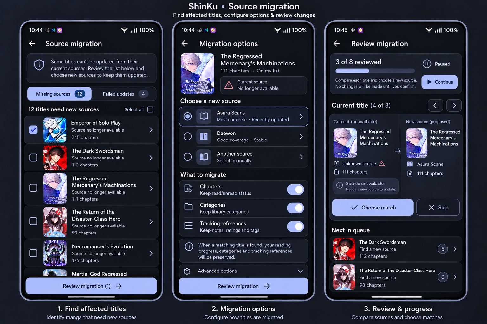
Review note: Sample source names and matching claims are illustrative; show only data supported by actual sources.
Screen briefs and behavior scope
- Find affected titles
Nested Migration page with segmented 'Missing sources' and 'Failed updates', counts, explanation, selectable affected manga rows and source names. Primary 'Review migration'. Do not silently move titles or delete progress.
- Migration options
Readable configuration page. Source selection, switches for chapters, categories and tracking references, short explanation that reading progress is preserved when matched. Explicit review button. Keep advanced choices collapsed and labels wrapped.
- Review & progress
Comparison of existing and proposed manga source with two small covers, title and source context. Actions 'Choose match' and 'Skip'. Show a compact progress card '3 of 8 reviewed', paused state and 'Continue'. No automatic-success claims or destructive default selections.
Exact image-generation prompt
04. Updates, history & downloadsGenerated · review needed
Implementation: 75% — partial (provisional) · Panel evidence and remaining work
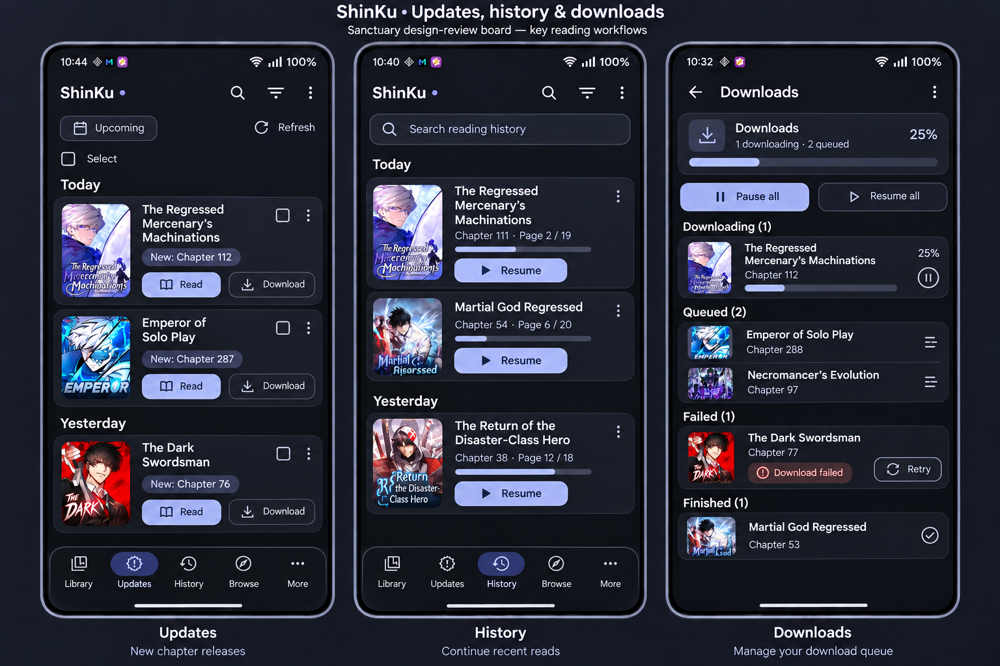
Review note: Rendered 2026-11-04. Downloads shows Pause all and Resume all as active together; implement only the action appropriate to queue state. Sample counts/progress are illustrative.
Screen briefs and behavior scope
- Updates
Home Updates tab with Today and Yesterday sections, manga thumbnail, full title, new chapter label and small download/read actions. Optional Upcoming chip leads to schedule. Clear refresh indicator and selection action, Updates selected in safe floating dock.
- History
Home History tab with search, day-grouped last-read entries, chapter/page progress and Resume action. Compact cover art and full title. Overflow exposes removal rather than a prominent destructive button. History selected in dock.
- Downloads
Nested Downloads queue. A compact aggregate progress header, one downloading chapter with progress and pause, queued rows, one failed row with Retry, and finished row. Clear 'Pause all' / 'Resume all' state, no conflicting buttons. No dock. Do not invent speeds; show progress percentages only.
Exact image-generation prompt
05. Library organizationGenerated · review needed
Implementation: 95% — visual acceptance pending · Panel evidence and remaining work
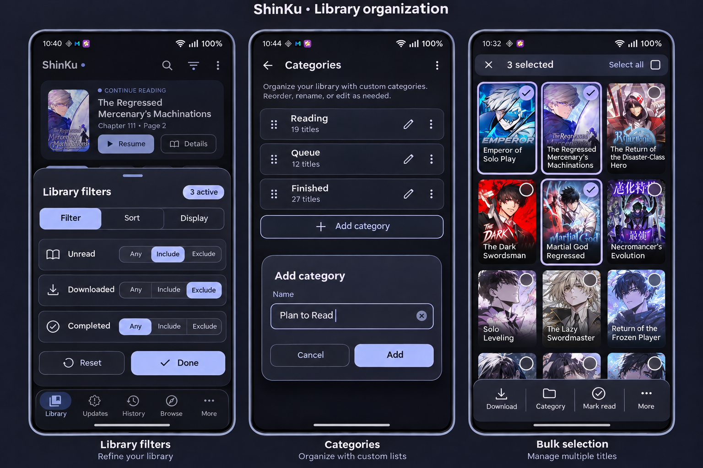
Review note: Rendered 2026-11-04. Filter badge says 3 active but only two rows have non-Any selections. Tri-state controls need checkmarks or text beyond color. Dialog and bulk-selection layouts are representative; verify safe final-row scrolling.
Screen briefs and behavior scope
- Library filters
Library behind a rounded bottom sheet. Tabs Filter, Sort, Display. Filter selected, tri-state rows with clear Include/Exclude/Any chips for unread/downloaded/completed, active filter count, Reset and Done. Selection states distinguishable beyond color. Underlying dock dimmed, not duplicated inside sheet.
- Categories
Nested Categories page. Category rows Reading, Queue, Finished with drag handles, counts and edit controls. A small Add category dialog has Name, Cancel and Add. Long names wrap and remain accessible. No fake automatic categorization or deletion.
- Bulk selection
Library grid in selection mode, clear top bar '3 selected', select all and close. Selected cover outlines and checkmarks; fixed bottom action area with Download, Category, Mark read, More. Hide home navigation while selecting and keep the final grid row reachable.
Exact image-generation prompt
06. Reading & chapter navigationGenerated · review needed
Implementation: 60% — partial (provisional) · Panel evidence and remaining work
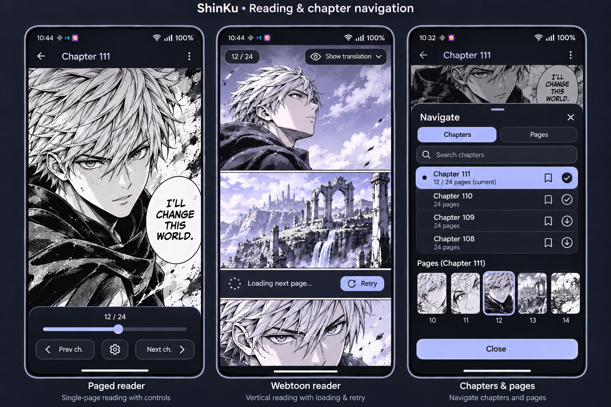
Review note: Rendered 2026-11-04. Webtoon loading row also shows Retry; separate loading and failure states. Generated chapter bookmark controls require capability verification; do not introduce unsupported actions.
Screen briefs and behavior scope
- Paged reader
Full-screen manga page with restrained top controls shown: back, Chapter 111, overflow. Bottom controls show 12 / 24, page slider, previous/next chapter actions and settings. Artwork remains dominant; controls only on user interaction. No home dock or unrelated cards.
- Webtoon reader
Vertically continuous manga panels with generous full-width artwork, a small page indicator 12 / 24 and a discreet translation visibility control. A small readable loading strip between pages 'Loading next page…' with Retry for one failed image. Keep navigation out of the artwork.
- Chapters & pages
Reader context behind a bottom sheet titled 'Navigate'. Tabs Chapters and Pages, Chapters selected. Search, clearly marked current chapter, read/download status and bookmarks. A modest page-thumbnail strip represents Pages navigation. Complete rows and bottom-safe close action.
Exact image-generation prompt
07. Translation in the readerGenerated · review needed
Implementation: 55% — partial (provisional) · Panel evidence and remaining work
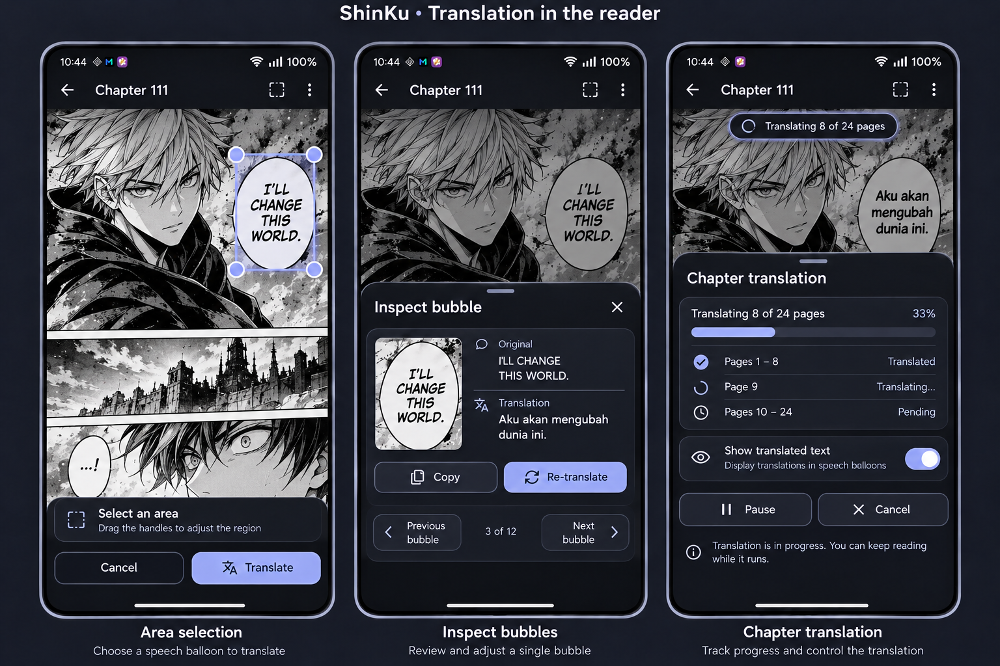
Review note: Rendered 2026-11-04. Translation text, counts and completion states are illustrative. Verify existing pause/cancel support and chapter scope before implementing controls; avoid treating generated state labels as confirmed behavior.
Screen briefs and behavior scope
- Area selection
Manga page in area-OCR selection mode. Frozen page context, obvious crop handles around one speech balloon, short instruction 'Select an area', Cancel and Translate actions in a reserved bottom bar. No fabricated translated text until an action completes.
- Inspect bubbles
Reader bubble-inspector sheet. Small selected-bubble preview, labels Original and Translation, short sample text, Copy and Re-translate controls. Previous/next bubble affordances and a visible close action. Respect reading order and preserve the visible manga context.
- Chapter translation
Reader page behind a compact progress pill 'Translating 8 of 24 pages'. Expanded progress sheet includes translated/pending rows, Pause or Cancel, 'Show translated text' switch and accessible status text. Translation overlays fit inside speech balloons and can be hidden. Never obscure all artwork with a giant opaque panel.
Exact image-generation prompt
08. Reader settings & page actionsGenerated · review needed
Implementation: 50% — partial (provisional) · Panel evidence and remaining work
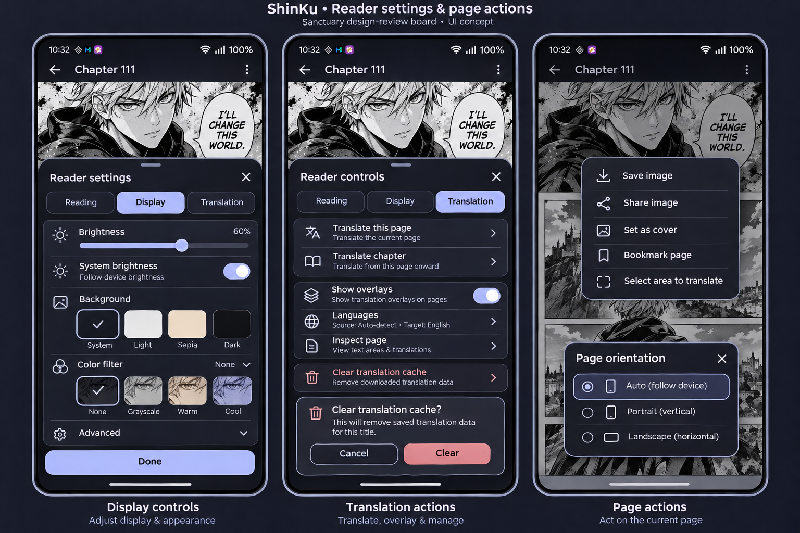
Review note: Rendered 2026-11-04. Brightness slider appears enabled while system brightness is on; align enabled states. Cache wording incorrectly says downloaded translation data and scopes removal to a title; use actual saved-cache semantics. Verify page bookmark/orientation actions against existing capabilities.
Screen briefs and behavior scope
- Display controls
Reader settings bottom sheet, tabs Reading, Display, Translation with Display selected. Brightness slider and System brightness switch, background selection, color-filter controls and a collapsed advanced section. Compact preview remains above sheet. Done safely inset from gesture bar.
- Translation actions
Reader controls sheet with Translation selected. Clearly separated 'Translate this page', 'Translate chapter', 'Show overlays' toggle, language settings and inspection access. Cache clearing is a quiet secondary/destructive action with confirmation, not the primary button. No pricing or provider secrets.
- Page actions
Long-press menu over a manga page. Readable rows Save image, Share image, Set as cover, Bookmark page, Select area to translate. Close and accessible labels; separate destructive or replacing actions. A small orientation-choice modal illustrates the same radio-list dialog pattern.
Exact image-generation prompt
09. Getting startedGenerated · review needed
Implementation: 50% — partial (provisional) · Panel evidence and remaining work
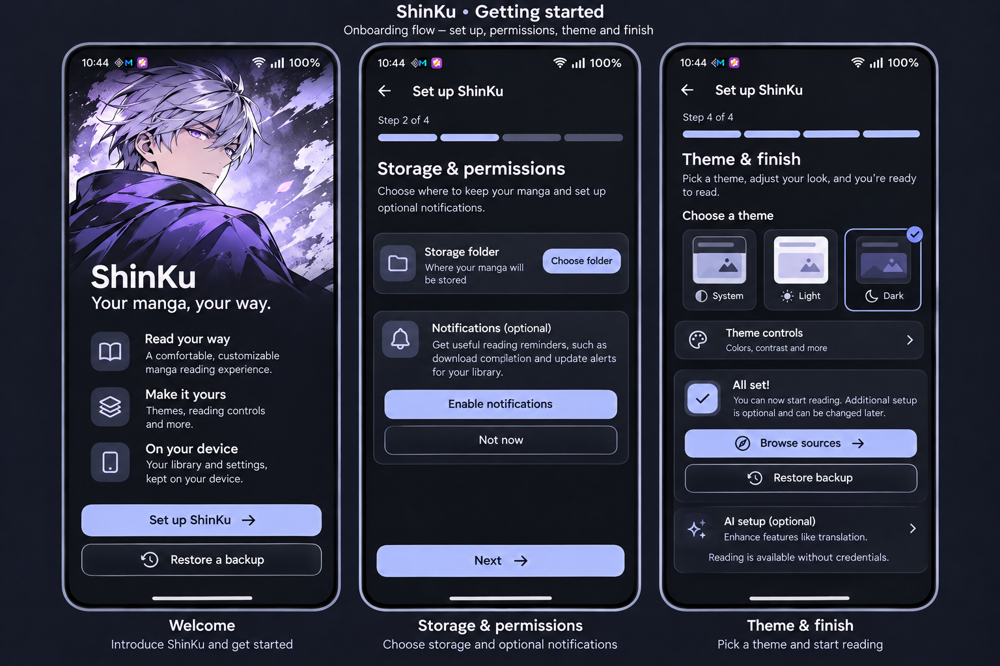
Review note: Rendered 2026-11-05 with built-in image_gen and the two approved references. Review Next-button gating: no selected storage folder is shown, so its enabled appearance is illustrative. Theme/finish combines two steps; verify actual onboarding flow. AI setup remains optional.
Screen briefs and behavior scope
- Welcome
Simple ShinKu welcome screen using existing visual identity, concise promise 'Your manga, your way'. Primary 'Set up ShinKu', secondary 'Restore a backup'. No sign-up wall, premium offer or mandatory AI configuration.
- Storage & permissions
Step 2 of 4. Storage folder row with Choose folder. Brief explanation for notifications, a contextual Enable notifications action and 'Not now'. Explain requests before invoking Android system dialogs. Next enabled only for required storage requirements, no broad permission grant button.
- Theme & finish
Theme step with System, Light, Dark samples, selected Dark, readable color preview, optional theme controls. Step 4 finish summary with Browse sources and Restore backup as next actions. AI setup clearly optional; reading available without credentials.
Exact image-generation prompt
10. Backups, restore & syncGenerated · review needed
Implementation: 50% — partial (provisional) · Panel evidence and remaining work
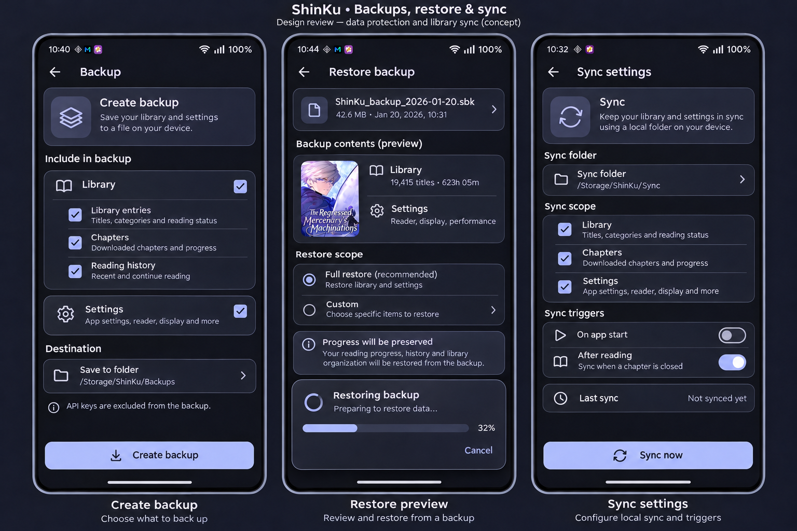
Review note: Rendered 2026-11-05. Review required: Chapters wording implies downloaded image files are backed up/synced; use actual metadata/progress scope. Restore counts/time and progress-preservation promise are illustrative. Cancel during active restore must not be implemented unless safely supported; require explicit confirmation before starting. Folder paths are examples, not Android storage APIs.
Screen briefs and behavior scope
- Create backup
Nested Backup page with clear sections Library and Settings, selectable categories/chapters/history options matching app capabilities, destination row and 'Create backup'. Small note 'API keys are excluded'. No password fields or invented backup encryption.
- Restore preview
Backup file selected, readable library/settings summary, scope choices, progress-preservation explanation and explicit Restore button. A progress state is visible as a small modal card, cancel availability represented only before irreversible work starts. No automatic success claim.
- Sync settings
Existing storage-based Sync settings. Folder selection, sync scope rows, on-start/after-reading trigger choices and clear last-sync status 'Not synced yet'. Primary 'Sync now' only when configured. No invented cloud account backend, conflict-merging wizard, or Dropbox functionality.
Exact image-generation prompt
11. Tracking & privacyGenerated · review needed
Implementation: 50% — partial (provisional) · Panel evidence and remaining work
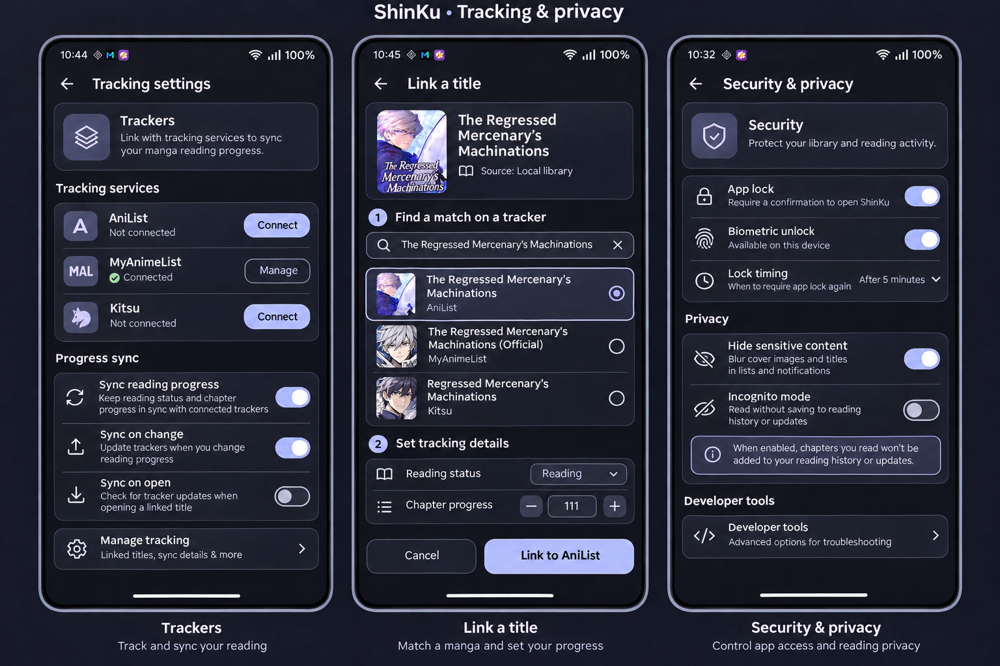
Review note: Rendered 2026-11-05. Connected status, biometric availability, chapter progress and matches are illustrative. Tracker search should be scoped to the selected service rather than merging providers into one result list unless supported. Verify sync toggles and hide-content behavior. Incognito wording must not imply stopping library updates; describe only actual history/tracking behavior. Source: Local library is illustrative, not real source metadata.
Screen briefs and behavior scope
- Trackers
Nested Tracking settings. Familiar AniList, MyAnimeList, Kitsu tracker rows, explicit Not connected or Connected sample states, connect controls. Note progress-sync choices and a quiet Manage entry point. Do not display actual account names or invented credentials.
- Link a title
Tracker search/match flow for a sample manga. Search field, result rows with cover and title, choose match, then reading-status and chapter-progress controls. Explicit Link confirmation. Clear Cancel/back navigation and source-versus-tracker distinction.
- Security & privacy
Nested Security preferences with App lock switch, biometric availability status, lock timing, hide-content options and Incognito explanation. Sensitive toggles clearly labeled; developer tools lower priority. Do not show fabricated guarantees that all network traffic is private.
Exact image-generation prompt
12. Core settings & appearanceGenerated · review needed
Implementation: 55% — partial (provisional) · Panel evidence and remaining work
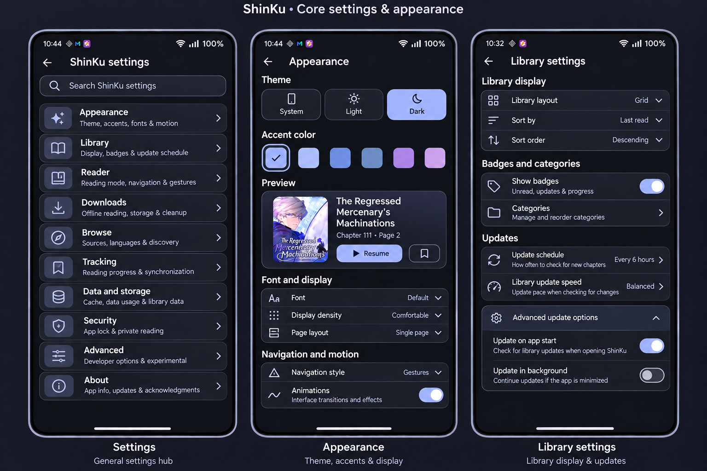
Review note: Rendered 2026-11-05. General Settings root is mislabeled ShinKu settings and needs a separate ShinKu hub entry. Font, density, page layout, navigation style and scheduling controls are illustrative; verify actual preference capabilities and preserve OS settings/defaults. Preview values are samples.
Screen briefs and behavior scope
- Settings
General Settings root. Search and grouped links Appearance, Library, Reader, Downloads, Browse, Tracking, Data and storage, Security, Advanced, About. Consistent compact rows, icons and chevrons, no home dock. Keep ShinKu-specific hub clearly linked without duplicate controls.
- Appearance
Theme selection System/Light/Dark, accent swatches in the approved palette, font/display preview, navigation-label and motion preferences where supported. A live miniature preview card makes choices clear. Save automatically, no oversized explanatory hero.
- Library settings
Grouped preferences for library display, badges, categories, update schedule and library-update speed. Readable descriptions and collapsible advanced update options. No renamed preference keys, forced defaults, or change in suggestion counts.
Exact image-generation prompt
13. Reader, browse & download preferencesGenerated · review needed
Implementation: 50% — partial (provisional) · Panel evidence and remaining work
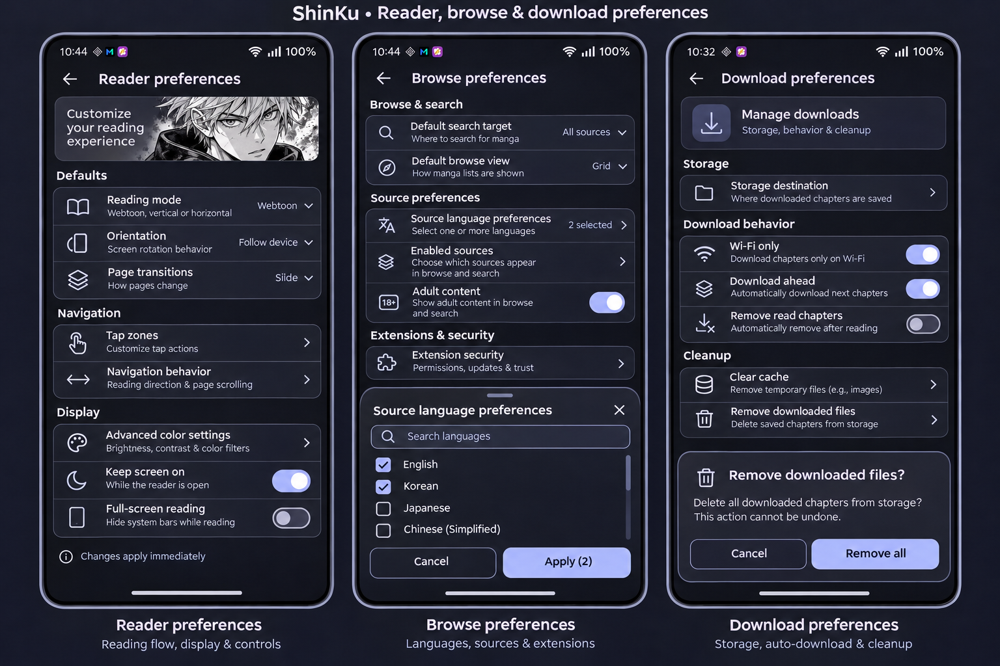
Review note: Rendered 2026-11-05. Language count matches the two selected example rows. Default search target, page transitions, extension-security grouping and download-ahead switch are illustrative; retain actual supported controls, values and inherited adult-content preferences. Clear-cache versus manga-file removal must match the real storage scopes; the all-downloads deletion confirmation is a design example, not an authorized deletion or new maintenance capability.
Screen briefs and behavior scope
- Reader preferences
Full reader-settings page with sections Defaults, Navigation, Display. Reading mode, orientation, page transitions, tap zones, advanced color settings. Use concise summaries and navigation to detailed forms; retain access to inherited options.
- Browse preferences
Source language preferences, enabled-source filtering, default search/browse choices and extension security entry points. Multiselect language sheet uses checkboxes with search. Preserve configurable sources and adult-content settings as existing options rather than adding censorship or new policies.
- Download preferences
Storage destination, Wi-Fi-only preference, download-ahead and removal settings, clear cache versus downloaded-files distinction. Destructive removal settings require clear scope and confirmation. Readable sublabels, no claimed free-storage amount or invented speed.
Exact image-generation prompt
14. Performance & maintenanceAwaiting generation
Implementation: 0% planned work; visual match unscored · Panel evidence and remaining work
Image pending — prompt ready
All three panel briefs are saved below.
Review note: Generation attempted 2026-11-05; tool returned usage_limit_reached and produced no image. Resume at this board after the tool-estimated reset.
Screen briefs and behavior scope
- Performance
ShinKu Performance page. Mode Standard, Low power, E-Ink choices; high-refresh-rate preference, predictive loading and enhanced scaling controls. Explain tradeoffs briefly without FPS guarantees. Use 'Enhanced scaling' rather than falsely claiming a neural model.
- Maintenance & source health
Source-health overview with illustrative healthy/unavailable/unknown states and retry/check actions. Links Smart categorizer, Missing sources, Failed updates and Storage cleanup. Clearly distinguish a diagnosis from an untested state. No unsupported real-time source SLA.
- Advanced tools
Developer-oriented settings grouped below a warning-neutral explanatory line. Debug info, worker status, logs, migration tools and database maintenance. A diagnostic details sheet contains generic version/runtime fields. Never display signing credentials, API keys, user titles or raw private logs.
Exact image-generation prompt
15. Reading journey & identityAwaiting generation
Implementation: 0% planned work; visual match unscored · Panel evidence and remaining work
Image pending — prompt ready
All three panel briefs are saved below.
Screen briefs and behavior scope
- Journey overview
Reading statistics with compact profile, clearly formatted chapter/time/streak values, date-range control and a simple readable reading-activity chart. Use illustrative values rather than claiming current telemetry. Cards have consistent hierarchy and complete numbers.
- Genres & patterns
Analytics page with readable genre bars and time-of-day reading chart, clear axis labels and text summaries as alternatives to color. No social ranking or invented source data; small genre labels and values fit within screen.
- Milestones & profile
Milestones grid with readable earned/locked badges. Profile edit sheet for display name/avatar and a compact share-card preview showing only opted-in statistics. Share is an explicit action, not automatic publication. Keep progress and badge information legible.
Exact image-generation prompt
16. Empty, loading & offline statesAwaiting generation
Implementation: 0% planned work; visual match unscored · Panel evidence and remaining work
Image pending — prompt ready
All three panel briefs are saved below.
Screen briefs and behavior scope
- Empty library
Library home empty state, calm existing icon, heading 'Your library starts here', one clear 'Browse sources' action and secondary Restore backup. Keep Library selected in dock; no fabricated manga cards or mandatory AI setup.
- Partial loading
Discover feed with skeleton cards in one shelf and already-loaded content in another. Inline message 'One source is unavailable' with Retry and Source details, avoiding an app-blocking full-screen error. Compact refresh indicator; Browse dock remains usable.
- Offline & no results
Search page with Offline banner, available cached manga cards and explicit 'Showing saved results'. Separate compact no-results card 'No matching titles' and Clear filters action in a small inset state example. No false promise of uncached online access.
Exact image-generation prompt
17. Dialogs, permissions & authenticationAwaiting generation
Implementation: 0% planned work; visual match unscored · Panel evidence and remaining work
Image pending — prompt ready
All three panel briefs are saved below.
Screen briefs and behavior scope
- Confirm an action
Dimmed Library with a carefully scoped 'Remove 3 titles?' confirmation. Explain library removal separately from deleting downloaded files, unchecked optional download deletion, Cancel and clearly labeled Remove. Large readable targets and no destructive action by default.
- App lock
ShinKu app-lock screen with a modest app mark, 'Unlock ShinKu', biometric action and supported device-credential fallback. Separate small contextual Android permission prompt example for notifications. Do not invent an app PIN system or expose reading content while locked.
- Website sign-in
Nested WebView frame for tracker/source authentication, visible domain placeholder 'Service website', back/close and open-in-browser actions. Clear 'Complete sign-in on the website' or 'Source verification required' status. No fake successful login, copied third-party branding, credential autofill or protection-bypass claims.
Exact image-generation prompt
18. Recovery, diagnostics & release informationAwaiting generation
Implementation: 0% planned work; visual match unscored · Panel evidence and remaining work
Image pending — prompt ready
All three panel briefs are saved below.
Screen briefs and behavior scope
- Restore issue
Backup restore failure screen with specific sample 'This file could not be read', useful Choose another file and View details actions. Preserve existing-library wording without promising rollback that does not exist. Show progress/error grouping and a safe back action.
- Crash recovery
Calm error-recovery screen, 'ShinKu stopped unexpectedly', Restart app, Copy diagnostics and a quieter sharing action. Warn that diagnostics should be reviewed before sharing. No fake technical stack trace, secret values or unsupported automatic repair.
- About & changes
About ShinKu with app icon style, version '2.8.1-preview.1', links release notes, open-source licenses and privacy. A readable What's new sheet shows short version-grouped entries and Close; links use familiar navigation rather than adding new accounts.
Exact image-generation prompt
19. Tablet & landscape layoutsAwaiting generation
Implementation: 0% planned work; visual match unscored · Panel evidence and remaining work
Image pending — prompt ready
All three panel briefs are saved below.
Screen briefs and behavior scope
- Tablet library
OVERRIDE layout: this board contains TWO landscape/tablet frames stacked on the LEFT and ONE portrait phone on the RIGHT. The upper tablet is a Library page with left navigation rail, wide search/header, compact resume card, category tabs and a six-column cover grid. Use available width without stretching cards or changing reading data.
- Landscape reader
Lower LEFT landscape frame: an immersive single-page reader with sensible page margins, minimal top/bottom controls and a compact side settings panel instead of a bottom sheet swallowing the page. Display/Translation remain accessible; no phone home dock in reader.
- Large-text phone
RIGHT portrait phone: the approved Library concept at visibly increased text size. Resume title wraps; category chips scroll; cover captions have space, navigation labels remain legible and all actions clear the safe area. Do not simply shrink fonts to force the original layout.
Exact image-generation prompt
20. Light, high-contrast & E-InkAwaiting generation
Implementation: 0% planned work; visual match unscored · Panel evidence and remaining work
Image pending — prompt ready
All three panel briefs are saved below.
Screen briefs and behavior scope
- Light theme
Approved ShinKu Library rendered in a calm light theme: warm off-white base, pale lavender cards, dark readable text, dark icons and a lavender selected navigation item. Same information hierarchy, full titles and three-column grid. Not a new brand.
- Accessible controls
Reader control sheet with enlarged text and more spacious rows, clear selected-state checkmarks, labels beside icons, readable contrast and focus outlines illustrating keyboard/screen-reader focus. Do not print meaningless screen-reader overlays or claim certified accessibility.
- E-Ink profile
ShinKu library in a static grayscale E-Ink-friendly mode, crisp black/white boundaries, no blur or gradients, clear selection marks and optional compact list layout. A small Performance preferences sheet shows E-Ink selected. No refresh-animation demonstration or battery/FPS promises.
Exact image-generation prompt
21. Specialist source integrationsAwaiting generation
Implementation: 0% planned work; visual match unscored · Panel evidence and remaining work
Image pending — prompt ready
All three panel briefs are saved below.
Screen briefs and behavior scope
- MangaDex follows
MangaDex follows screen with Reading, Planned, Completed filters, readable cover list, source sync status 'Not checked yet' and refresh action. Authentication entry is explicit. Do not display private account information or fabricate synced success.
- Source integration settings
E-Hentai/ExHentai configuration presented as a structured advanced integration page: account status Not connected, language/content preferences and safe navigation to website login. Preserve existing capability scope; use generic neutral thumbnails, no explicit artwork or credentials.
- Metadata editor
Editable manga metadata screen with cover preview, title, author, artist, genre chips and description fields. Clearly separate source metadata from local overrides, explicit Save/Cancel where editing requires confirmation. Long text wraps and source-provided values are recognizable.
Exact image-generation prompt
22. Extension details & merged mangaAwaiting generation
Implementation: 0% planned work; visual match unscored · Panel evidence and remaining work
Image pending — prompt ready
All three panel briefs are saved below.
Screen briefs and behavior scope
- Extension details
Installed extension detail page with generic name, version/language, source list, preferences entry, update and quiet uninstall action. Trust state must be explicit and reviewable. No invented trusted certificate or automatic update guarantee.
- Source preferences
Source-specific preference screen using Sanctuary rows while retaining extension-provided content, language/select fields, switches and a password field masked by bullets. The example contains no actual endpoint secrets. Links to website/authentication follow the shared WebView pattern.
- Merged manga & notes
Merged manga configuration: component title/source rows, chapter priority/reordering and settings links. A small Notes edit sheet shows a multiline local note, Cancel and Save. Keep merge controls separate from irreversible source deletion and preserve reading progress.
Exact image-generation prompt
23. Batch tools & advanced organizationAwaiting generation
Implementation: 0% planned work; visual match unscored · Panel evidence and remaining work
Image pending — prompt ready
All three panel briefs are saved below.
Screen briefs and behavior scope
- Batch add
Existing batch-add workflow. Multiline manga/URL input, concise accepted-format help, validation summary and Review titles action. Show readable per-item pending/invalid states in preview, then explicit Add selected. No external import system or unsupported file format.
- Smart search
Existing Smart search / title-matching interface. Original manga summary, editable search text, candidate results grouped by source, Match and Skip actions. Label suggestions as candidates, never guaranteed exact matches; no fake AI confidence percentage.
- Advanced categories
Source-category management with readable named groups and reorder handles. A tag-sort preferences sheet with clear ordered rows, and a small biometric-timing setting entry represent existing advanced organization options using shared patterns. No loss of inherited settings.
Exact image-generation prompt
24. Widgets & system surfacesAwaiting generation
Implementation: 0% planned work; visual match unscored · Panel evidence and remaining work
Image pending — prompt ready
All three panel briefs are saved below.
Review note: Respect Android/OEM-controlled layouts and supported widget sizes.
Screen briefs and behavior scope
- Updates widget
Home-screen updates-grid widget with consistent manga covers, identity and supported controls.
- Widget size variants
Compact cover-screen/lock-screen and larger home-screen widget previews with loading/empty states.
- Notifications & shortcuts
Platform download/update notifications and existing launcher shortcuts, preserving Android system behavior.
Exact image-generation prompt
Generated with the built-in image tool. Content and metrics are illustrative. Reuse existing app behavior and tokens; validate actual layouts, accessibility, permissions, extension interfaces and data safety before shipping.